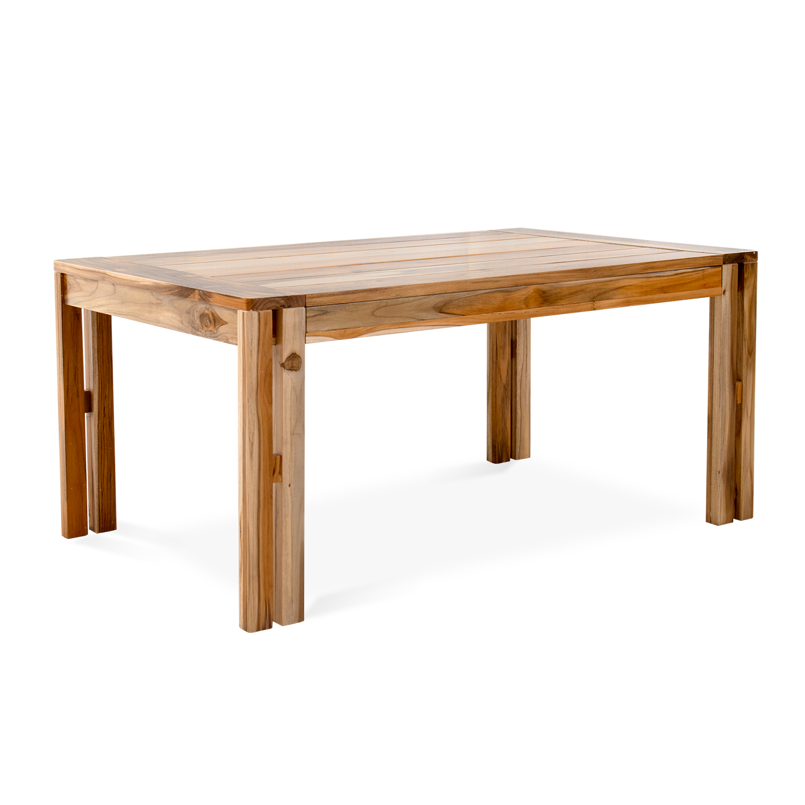
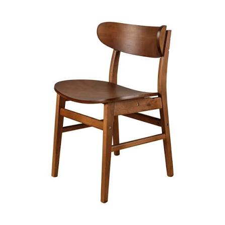
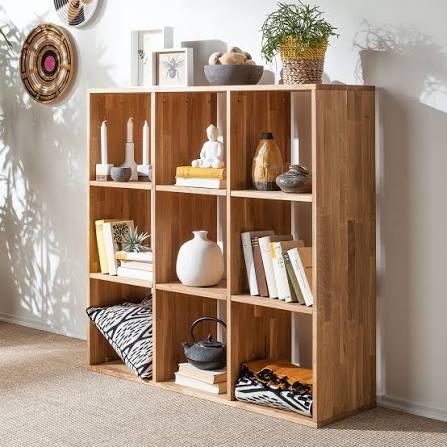
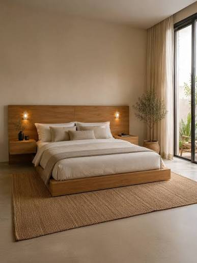

Catálogo de Muebles
Descubre las creaciones de DECOWOOD, donde todo es de calidad.
-
Mesas de Comedor: Fabricadas con Madera Nueva de roble. Cuentan con un sellado especial resistente al agua.

-
Sillas Cada Silla es tallada y ensamblada a mano. Arreglos y ajustes de altura a medida.

-
Estanterías Elaboradas con Madera antigua restaurada para dar un toque industrial y único a tu espacio.

-
CamaAquí encontrarás maderas y muebles de alta calidad para tu descanso.

Cada madera que manejamos es de la más alta calidad